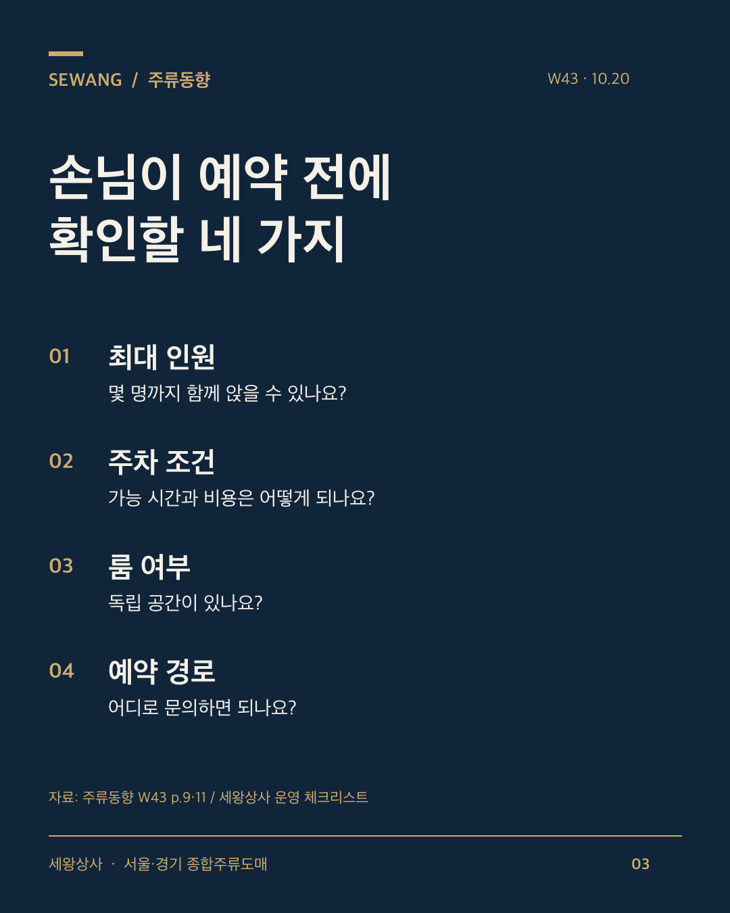

일부 매장은 10월부터 연말 예약을 안내하고 있습니다. 이번 주 세왕상사 주류동향은 과거 두 겨울의 연말 모임 관련 게시글과 올해 공개된 예약 안내 사례에서 준비의 단서를 찾았습니다.
게시글의 증가나 특정 표현의 언급량은 실제 예약·방문·판매량을 뜻하지 않습니다. 이 글은 그 자료를 참고해 우리 매장에서 확인할 사항을 정리한 요약입니다.
1. 예약 전에 필요한 정보를 모아 두세요
황남(광화문)은 10월 1일, 조양관(강남역)은 10월 2일 연말 예약을 안내했습니다. 일부 매장의 사례이지만, 예약 시점과 이용 조건을 미리 설명하는 방식을 참고할 수 있습니다.
- 최대 인원: 몇 명이 함께 앉을 수 있나요?
- 주차 조건: 이용 시간·비용은 어떻게 되나요?
- 룸 여부: 독립 공간이 있나요?
- 예약 경로: 전화·메시지 중 어디로 문의하나요?
실제로 가능한 정보만 정리해 네이버 플레이스와 인스타 소개, 예약 안내에 일관되게 표시하세요.

2. 주류 세트에는 종류와 수량을 적으세요
세트 이름만으로는 손님이 포함 내용을 알기 어렵습니다. 포함 주종과 주종별 병 수, 가격과 적용 인원을 구체적으로 안내하세요. 와인 도입은 게시글 언급 순위만 보고 정하지 말고 실제 문의, 보관 여건과 회전율을 살펴보세요.
3. 점심 단체를 받는다면 운영 조건부터 정하세요
점심 단체 운영이 가능한 매장은 예약 가능 시간, 메뉴, 최소 인원, 준비 시간을 함께 정리해 둘 수 있습니다. 점심 수요가 늘었다고 단정하기보다 우리 매장의 문의와 운영 여건을 기준으로 판단하세요.
출처: 세왕상사 주류동향 W43(2026.10.20), p.6·8·9·11. 기초자료: 썸트렌드 네이버 블로그 게시글·연관어 및 2026.10.17 수집한 공개 인스타 게시물. 기간과 분석 한계는 전체 PDF에 기재했습니다.
오픈 준비 중인 사장님께
아래는 정보지 내용을 창업 준비에 적용한 세왕상사의 추가 안내입니다. 업종과 주요 메뉴, 보관 공간과 냉장고 자리, 생맥주 장비, 오픈일과 첫 발주 일정을 함께 살펴보세요.
서울·경기에서 음식점·주점을 준비 중이시면 카카오톡에 ‘창업상담’과 지역·업종·오픈 예정일을 남겨주세요. 주류 구성과 첫 발주, 냉장고·생맥주 장비를 함께 상담합니다.
10월 21일(수)은 세왕상사 임시휴무입니다. 휴무 중 남겨주신 문의는 이후 순차 확인합니다.
전체 정보지에서 이어서 볼 내용
전국 호프주점 통계, 과거 두 겨울의 게시글 흐름, 함께 등장한 단어와 술 이름, 공개 예약 안내 사례, 4분기 운영 달력을 담았습니다.